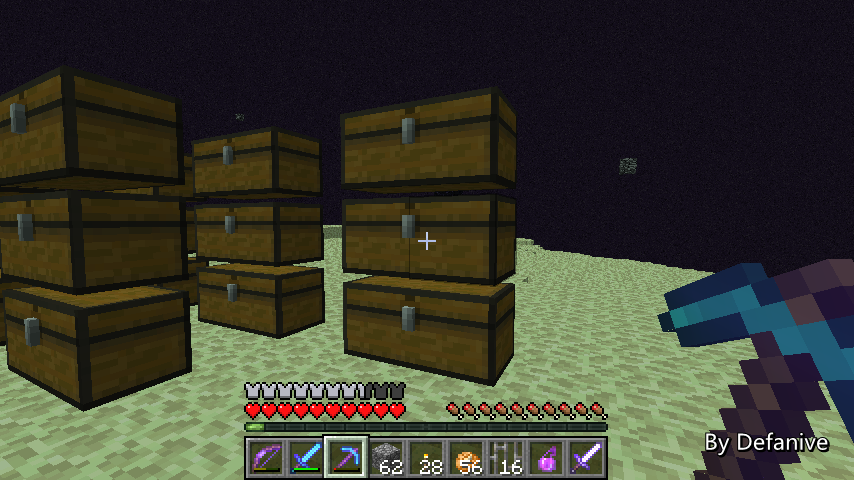
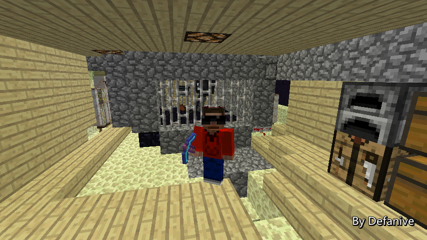

首页
上一页
269
270
271
272
273
274
274
275
276
277
278
279
下一页
末页
defanive2
无尽黑夜
14
接下来就要把这一块黑曜石给挖掉
这一块黑曜石的右边是一个BUD
这个BUD会被用于检测什么时候开始循环伤害凋零
——来自 MCLive
22888楼
2013-09-28 10:46
defanive2
无尽黑夜
14
挖掉之后就可以封棺了
凋零会被卡在这里面无法逃脱
——来自 MCLive
22890楼
2013-09-28 10:47
defanive2
无尽黑夜
14
下一步就是打开探测器BUD的开关
当遗迹的延时系统结束之后，就会往传送门扔物品
此时黑曜石平台被刷新，BUD检测到
启动伤害凋零的装置
这样就做到了发射装置和伤害装置同步进行
——来自 MCLive
22891楼
2013-09-28 10:49
defanive2
无尽黑夜
14
接下来大家可能就要问了，为什么延时系统还没结束呢？
按理来说，3.42分钟应该早就过了
离开主世界之后，有1分钟的冷却时间
在1分钟冷却时间里主世界仍然正常执行的
延时系统也会正常的进行延时
而过了1分钟之后，主世界就被彻底卸载了
因此延时系统也被冻结了
要解冻，只需要往传送门扔一个物品就可以了
扔了这个物品之后，延时系统应该就会正常执行
过一会就会开始向传送门扔物品了
刷黑曜石就开始了
——来自 MCLive
22892楼
2013-09-28 10:51
defanive2
无尽黑夜
14
可以看到延时系统已经结束了
第一个物品通过了传送门，BUD检测到了
于是启动了伤害系统
每2秒就会使用活塞窒息凋零1次
凋零在每次受伤时都会破坏身边3x3x4的方块
因此达到了收集黑曜石的目的
接下来，物品不断通过传送门，刷新黑曜石平台
伤害系统不断伤害凋零，使凋零破坏黑曜石
达到了刷黑曜石的目的
PS 伤害凋零的频率不能超过2秒1次
否则凋零就会强制发射蓝色骷髅头了
——来自 MCLive
22894楼
2013-09-28 10:56
defanive2
无尽黑夜
14
可以看到黑曜石被非常高速的刷出
——来自 MCLive
22896楼
2013-09-28 11:00
defanive2
无尽黑夜
14
运行5分钟左右，第一个箱子的收获
——来自 MCLive
22897楼
2013-09-28 11:02
defanive2
无尽黑夜
14
第二个箱子的收获
PS 由于漏斗矿车吸收物品的中心不对称
所以说第一个箱子产量总是会高于第二和第三个箱子
——来自 MCLive
22898楼
2013-09-28 11:03
defanive2
无尽黑夜
14
运行非常稳定，第一个箱子的收获
——来自 MCLive
22899楼
2013-09-28 11:06
defanive2
无尽黑夜
14
可以看到整个机器的运行过程
首先，一个物品（腐肉）从遗迹传送了过来
导致了黑曜石平台刷新
——来自 MCLive
22900楼
2013-09-28 11:07
defanive2
无尽黑夜
14
接下来活塞推出实体方块，让凋零受伤
——来自 MCLive
22901楼
2013-09-28 11:08
defanive2
无尽黑夜
14
受伤过后活塞立即收回
凋零延迟约0.5秒之后破坏3x3x4内的所有方块
也就把黑曜石破坏掉了
——来自 MCLive
22903楼
2013-09-28 11:09
defanive2
无尽黑夜
14
最后继续这个循环，不断的刷黑曜石
只要遗迹那边的物品发射装置的物品还没用完
黑曜石就可以继续刷下去
——来自 MCLive
22909楼
2013-09-28 11:10
defanive2
无尽黑夜
14
简单统计了一下，3个箱子加起来已经刷了超过50组黑曜石了
——来自 MCLive
22911楼
2013-09-28 11:12
defanive2
无尽黑夜
14
凋零这么危险的东西肯定不能一直长留在END
一旦离开END，下一次出生在黑曜石平台上就肯定会被凋零虐
因此大家应该也都猜到了，这个机器是一次性的
一旦所有物品都用完之后
我就会把凋零杀死，并且把机器拆除
这就是为什么我打算一次性刷27大箱黑曜石了
——来自 MCLive
22914楼
2013-09-28 11:18
defanive2
无尽黑夜
14
这个机器的另外一点就是
遗迹发射装置的chunk是被临时加载的
也就是说，一旦我退出世界之后
即使再进存档，遗迹也不会重新被加载了
也就是说，中途不能暂停什么的
一运行就要让这个机器一直运行到终点
——来自 MCLive
22915楼
2013-09-28 11:21
defanive2
无尽黑夜
14
后面的电路全貌
非常简单的一个电路：
脉冲->脉冲缩短器->窒息伤害活塞组
——来自 MCLive
22919楼
2013-09-28 11:28
defanive2
无尽黑夜
14
接下来我们进行一点计算吧
每2秒发射一个物品
3箱物品总共是：54x64x3=10368个物品
每个物品耗时2秒，1小时3600秒，总共耗时
10368x2/3600=5.76小时
因此这个机器会在运行5.76个小时后结束
——来自 MCLive
22920楼
2013-09-28 11:30
defanive2
无尽黑夜
14
第一个大箱子已经接近满了
右边的2个大箱子也快了
——来自 MCLive
22921楼
2013-09-28 11:32
defanive2
无尽黑夜
14
接下来在外面开始建一个比较大的临时储存
手动转移黑曜石到这里面
PS 其实可以继续往下拓展收集系统
但是懒得挖了所以。。手动转移吧
反正1 2个小时转移一次没什么问题
——来自 MCLive
22923楼
2013-09-28 11:34
defanive2
无尽黑夜
14
第一箱已满
——来自 MCLive
22924楼
2013-09-28 11:35
defanive2
无尽黑夜
14
截至目前为止，3箱半都已经填满黑曜石了
10%的任务完成了
机器仍然稳定运行
——来自 MCLive

22927楼
2013-09-28 11:51
defanive2
无尽黑夜
14
大概整个机器就是这样了
困凋零的概念是由Dan提出的
其余部分的机器都是由我自己设计出来的
PS Panda4994在一个星期前也做了这个装置
不过他的思路和我的有挺多不同之处
个人更喜欢我的设计（废话。。）
——来自 MCLive
22929楼
2013-09-28 11:57
defanive2
无尽黑夜
14
今天直播大概就是这样了
我仍然会继续挂机刷一会的
每过1-2个小时会给大家更新一下机器的运行情况
但是直播内容已经结束了
这个机器的具体实现和讲解会在下一次直播里面进行
大概就是这样了，挂机看视频去
——来自 MCLive

22935楼
2013-09-28 12:04
defanive2
无尽黑夜
14
几个小时过去了，15个大箱子都已经装满黑曜石了
中途重新校准了脉冲几次次
除此之外整个机器都运行顺畅
——来自 MCLive
22945楼
2013-09-28 14:35
defanive2
无尽黑夜
14
通过传送门的物品也从腐肉变成骨粉了
意味着大半部分的任务都已经完成了
——来自 MCLive
22946楼
2013-09-28 14:36
defanive2
无尽黑夜
14
虽然说回收这些发射过来的物品并不是主要目标
但是绝大部分的物品都被回收了
——来自 MCLive
22953楼
2013-09-28 14:56
defanive2
无尽黑夜
14
物品发射器的所有物品终于发射完了！
也就是说这个机器已经完结他的使命了！
——来自 MCLive
22957楼
2013-09-28 16:52
defanive2
无尽黑夜
14
可以关闭伤害凋零的电路了
——来自 MCLive
22958楼
2013-09-28 16:52
defanive2
无尽黑夜
14
接下来下一步就是杀凋零了
争取产生最小的环境破坏下杀死凋零
——来自 MCLive
22959楼
2013-09-28 16:54
首页
上一页
269
270
271
272
273
274
274
275
276
277
278
279
下一页
末页